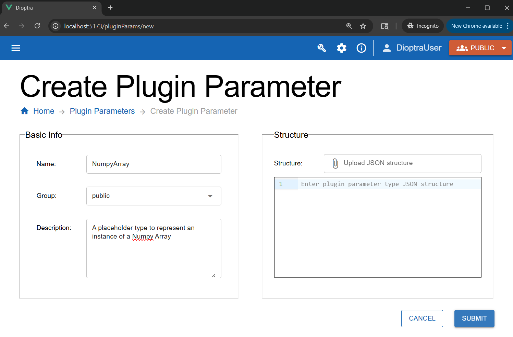
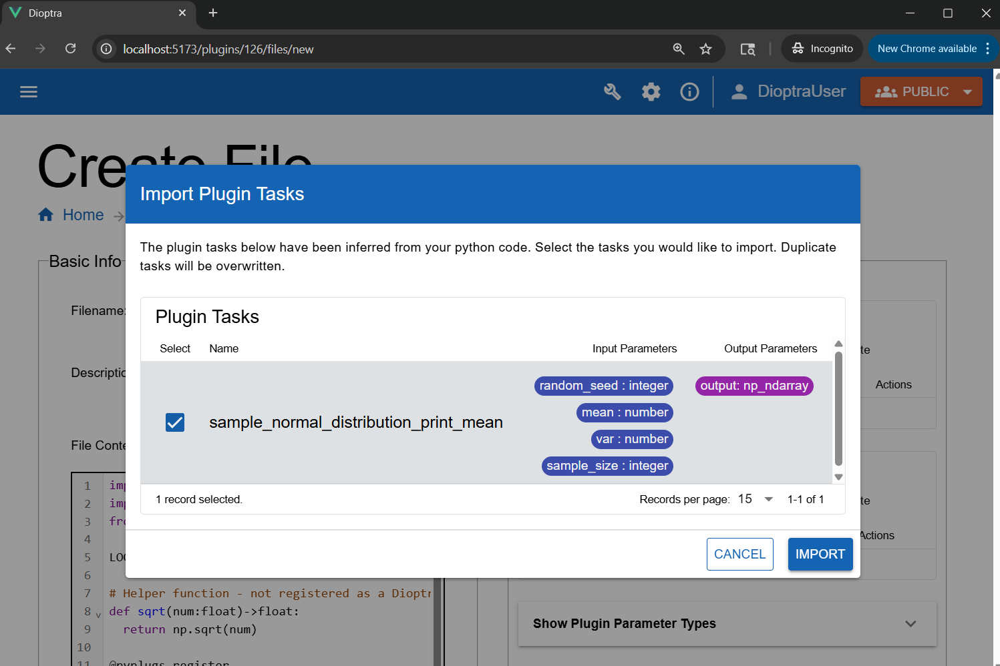
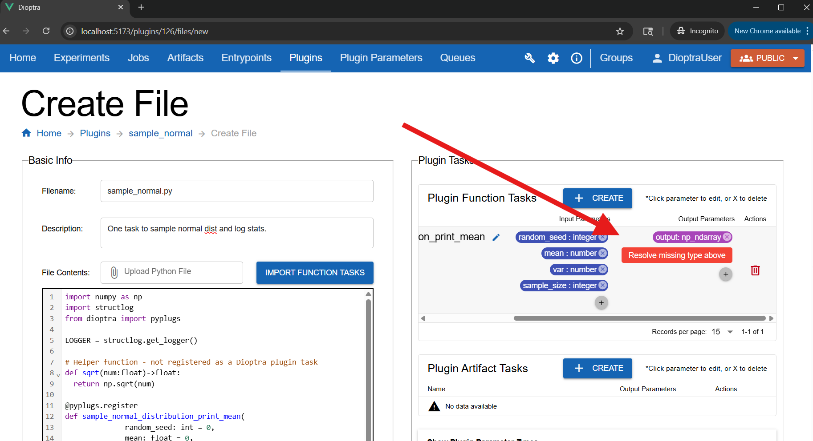
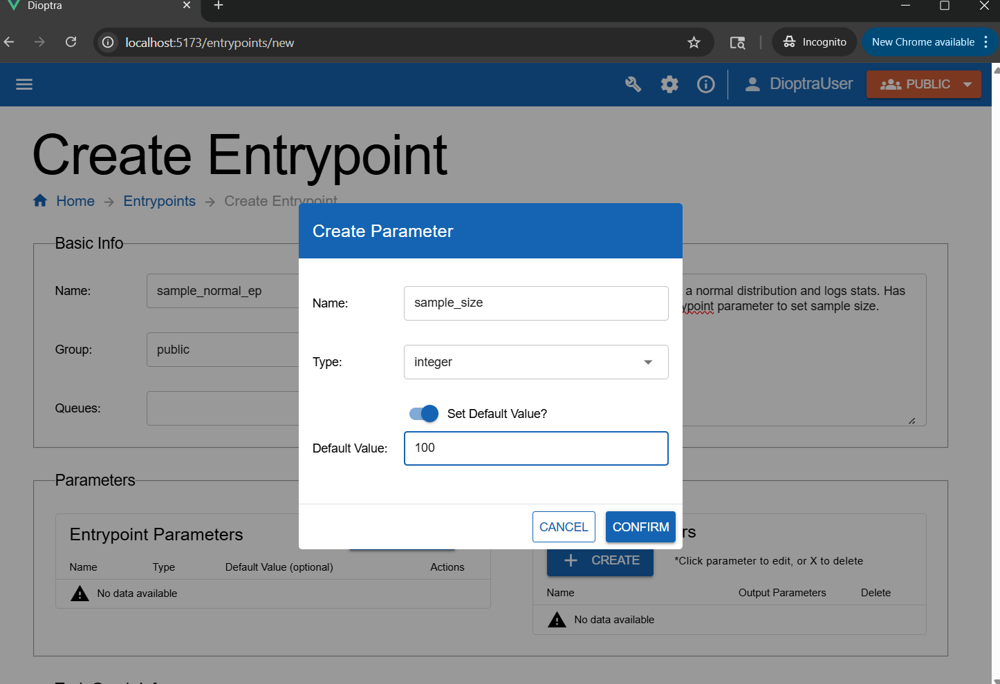
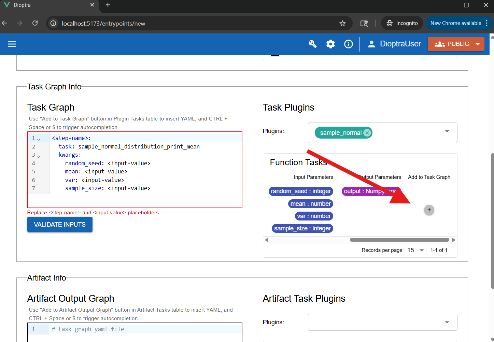
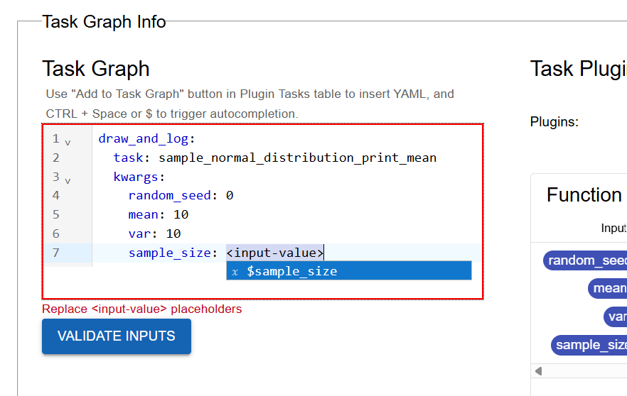
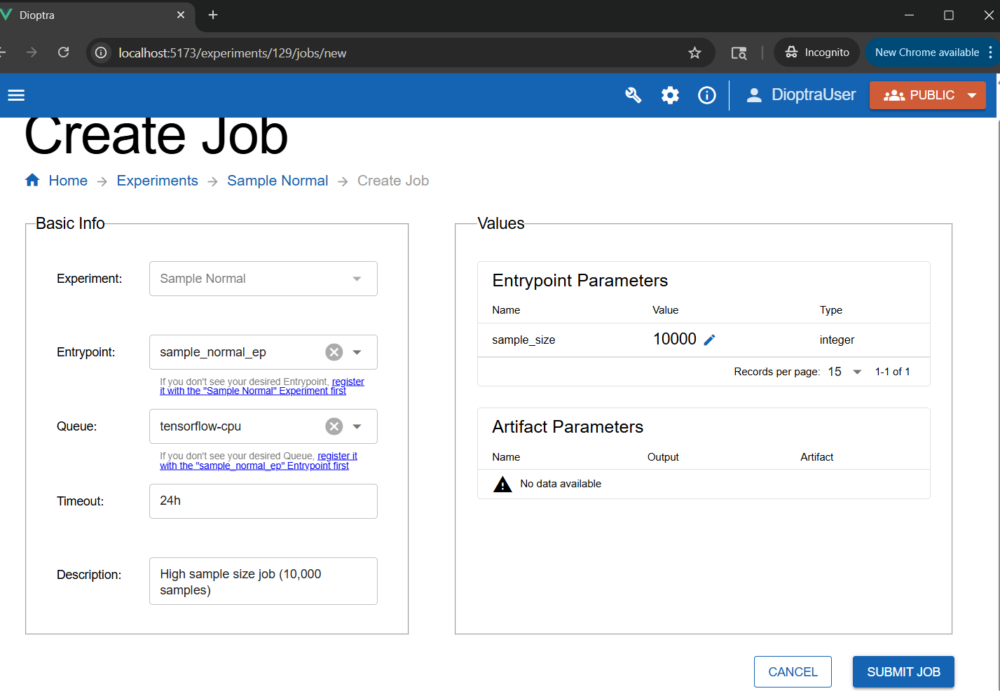
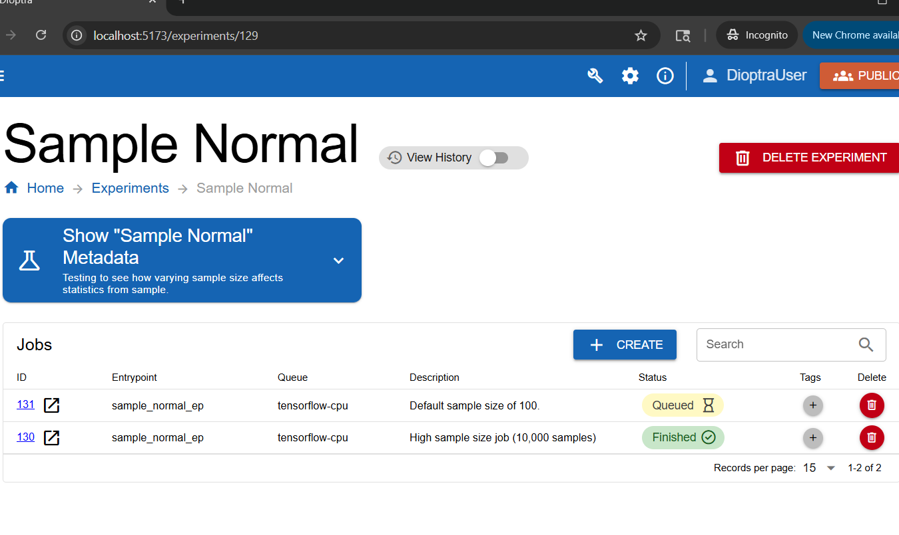

Adding Inputs and Outputs#
Overview#
In the Hello World Tutorial, you created a plugin with one task and ran it through an entrypoint and experiment. Now, you will extend that idea to include task inputs, task outputs, and entrypoint parameters.
This will let you parameterize input parameters for a plugin task when running a job. After running multiple jobs, you will compare outputs and observe how different sample sizes impact the observed sample mean’s relationship to its underlying distribution.
Prerequisites#
Before starting, ensure you have set up Dioptra and have created a User and Queue.
Install Dioptra - Obtain the Dioptra containers and create a deployment
Set Up Dioptra in the GUI - Create a user and queue in the GUI (Hello World Tutorial)
Workflow#
Step 1: Create a New Type#
The Plugin Task you will define will output a Numpy array. Before registering this output in your plugin task, you need to define the Numpy array type in Dioptra.
Navigate to the Plugin Parameters tab.
Click Create.
Enter the name:
NumpyArray. Add an optional short description.Click Submit.

Creating a new Parameter Type in the GUI.#
Learn More
Plugin Parameter Types - Explainer on Plugin Parameter Types
Step 2: Create the Plugin#
You will now create a new plugin with one task. This task accepts four parameters:
* random_seed
* sample_size
* mean
* var
The function samples a normal distribution, logs the mean, and then returns the array.
Go to the Plugins tab and click Create Plugin.
Name it
sample_normaland add a short description.In the plugin list, click the row corresponding to the Sample Normal Plugin you just created to go to the Plugin Files table.
Add a new Python file named
sample_normal.py.Paste the code below into the editor.
sample_normal.py
import numpy as np
import structlog
from dioptra import pyplugs
LOGGER = structlog.get_logger()
# Helper function - not registered as a Dioptra plugin task
def sqrt(num:float)->float:
return np.sqrt(num)
@pyplugs.register
def sample_normal_distribution_print_mean(
random_seed: int = 0,
mean: float = 0,
var: float = 1,
sample_size: int = 100) -> np.ndarray :
rng = np.random.default_rng(seed=random_seed)
std_dev = sqrt(var)
draws = rng.normal(loc=mean, scale=std_dev, size=sample_size)
draws_mean = np.mean(draws)
diff = np.abs(mean-draws_mean)
pct = 100*diff/mean
LOGGER.info(
"Plugin 2 - "
f"The mean value of the draws was {draws_mean:.4f}, "
f"which was {diff:.4f} different from the passed-in mean ({pct:.2f}%). "
"[Passed-in Parameters]"
f"Seed: {random_seed}; "
f"Mean: {mean}; "
f"Variance: {var}; "
f"Sample Size: {sample_size};"
)
return draws
Step 3: Register the Task#
Unlike in the Hello World simple logging function task with no inputs/outputs, this Task requires us to register the inputs and outputs along with their Types. Using Dioptra’s autodetect functionality will help here.
Click Import Function Tasks (top right of the editor) to auto-detect functions from
sample_normal.py.

Using “Import Tasks” to automatically detect and register plugin tasks.#
Note
Input and output types are auto-detected from Python type hints and the return annotation (->).
You may see an error under Plugin Tasks: Resolve missing type for the
np_ndarrayoutput. This is because the custom type is calledNumpyArray, notnp_ndarray, which is the default name inferred from the return type.

The output type was detected as np_ndarray, but the type you created is called NumpyArray.#
Fix the mismatched param type:
Click the
outputbadge.Set Name to
outputand Type toNumpyArray.
Once you’ve corrected the errors, save the plugin file by clicking submit.
Learn More
Plugins - Syntax reference for creating plugins
Step 4: Create Entrypoint Parameters#
You will create an entrypoint that accepts a parameter, allowing you to change the sample size passed to this Function Task dynamically at Job runtime.
Navigate to Entrypoints and click Create Entrypoint.
Name it
sample_normal_epand add a short description.Attach the
tensorflow-cpuQueue to the Entrypoint.In the Entrypoint Parameters window, click Add Parameter:
Name:
sample_sizeType:
intDefault value:
100

Creating an entrypoint parameter allows the parameter to be changed during a job run.#
Step 5: Define Task Graph#
Now add the task to the graph and bind the parameters.
In the Task Plugins window, select
sample_normal.Click Add to Task Graph. This auto-populates the YAML with default structure.

Using “Add To Task Graph” to automatically populate the YAML editor.#
Edit the YAML to bind the parameters. Map
sample_sizeto the entrypoint parameter ($sample_size) and hardcode the others to something reasonable (e.g.random_seed=0,mean=10,var=10)

Binding the task parameters in the YAML editor.#
Ensure the task graph is valid by clicking Validate Inputs. Assuming all Types are set appropriately for inputs / outputs, this should pass.
Click Submit Entrypoint to save.
Learn More
See Task Graph Syntax for detailed reference documentation on Task Graph YAML syntax
Step 6: Create an Experiment and Run Jobs#
You will create an Experiment and then run multiple Jobs within it using different parameters.
Navigate to the Experiments tab. Create a new Experiment called
Sample Normal.In the Entrypoints list, add the
sample_normal_epEntrypoint.Click Submit Experiment, then click the row corresponding to that Experiment.
Click Create in the Jobs table.
Select
sample_normal_epfor the Entrypoint andtensorflow-cpufor the queue.
Submit a high sample size job:
Set the
sample_sizeparameter to10000. Add a Job description.Click Submit Job.

Setting the sample size parameter for a job to 10,000.#
Submit a low sample size job:
Create a second job using
sample_normal_ep, but this time leavesample_sizeat the default100.

Jobs queue, start, and finish.#
Step 7: Inspect Results#
Once the jobs finish, inspect the logs for each.
Job with Sample Size 100:
Log Output (Small Sample)
Plugin 2 - The mean value of the draws was 10.2565, which was 0.2565 different from the passed-in mean (2.56%). [Passed-in Parameters]Seed: 0; Mean: 10; Variance: 10; Sample Size: 100
Job with Sample Size 10,000:
Log Output (Large Sample)
Plugin 2 - The mean value of the draws was 9.9971, which was 0.0029 different from the passed-in mean (0.03%). [Passed-in Parameters]Seed: 0; Mean: 10; Variance: 10; Sample Size: 100000
Notice that the sample mean was much closer to the distribution mean when the sample size was larger.
Note
This experiment is a simple illustration of the Law of Large Numbers: as the sample size increases, the sample mean tends to get closer to the population mean.
Conclusion#
You now know how to:
Define custom Types
Register Plugin Tasks with inputs and outputs
Run Entrypoints and Jobs with parameters
Next, you’ll chain multiple tasks together into a single workflow.